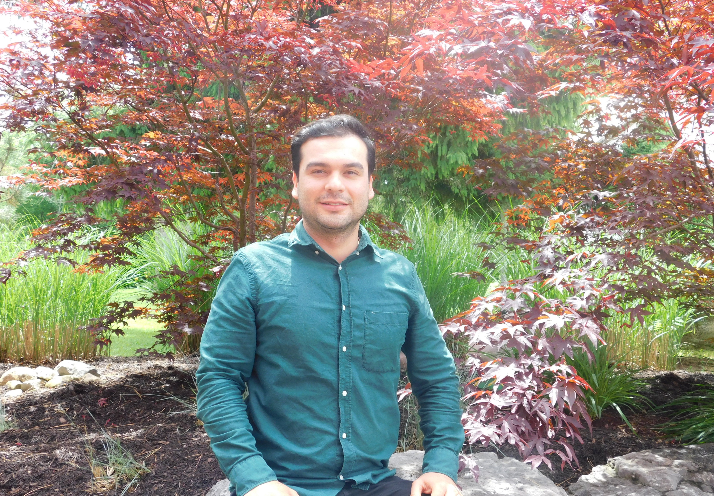

Luis Suarez

Summary
One-year post-graduate certificate in Project Management, specialist in Financial Risk Management, bachelor’s degree of Financial Engineering, with more than 8 years of experience in customer service, insurance sales representative, providing financial advice, and the financial sector.
Education
- Postgraduate one-year certificate in Project Management
Fanshawe College. London, Ontario
September 2022 – May 2023
- Postgraduate degree in financial risk management
Sergio Arboleda University, Colombia
January 2014 – December 2014
-
Bachelor’s degree in Financial Engineering
UNAB University, Colombia
January 2006 – July 2011
Work Experience
-
Insurance Broker
Robert J Morris Insurance & Consulting Ltd
Thamesford, ON
November 2022 – Currently
-
Independent Consultant
Desjardins Development International
Bogota, Colombia
October 2020 – June 2022
Skills
- Customer Service
- Microsoft Excel
- Analytical Skills
- Web Developer